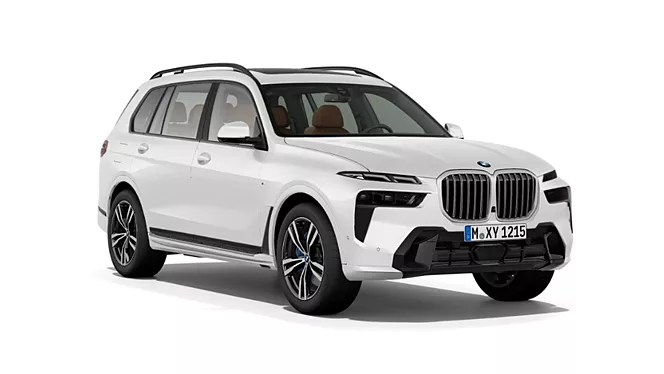

<!DOCTYPE html>
<html lang="en">

<head>
    <meta charset="UTF-8">
    <meta name="viewport" content="width=device-width, initial-scale=1.0">
    <title>Document</title>
    <link rel="stylesheet" href="toyota.css">
</head>

<body>

</html>
<div class="progress-bar"></div>
<div class="navbar">
    <div class="logo-container">
        
        <div>
            <p>
                <h2>BMW</h2>
            </p>
        </div>

    </div>
    <!-- You can add more items to the navbar here if needed -->
</div>
<section>
    <h1>"Explore BMW'S Iconic Models"</h1>
    <div class="card-container">
        <div class="card">
            <h2>BMW 3-series </h2>
            
            <p>The Fortuner is a rugged, powerful SUV with a commanding presence on and off the road. Known for its reliability and off-road capabilities, it’s a favorite for those who enjoy both adventure and comfort.</p>
            <a href="3-seriesdet.html"><button>Know more</button></a>
        </div>

        <div class="card">
            <h2>BMW X3 </h2>
            
            <p>The Fortuner is a rugged, powerful SUV with a commanding presence on and off the road. Known for its reliability and off-road capabilities, it’s a favorite for those who enjoy both adventure and comfort.</p>
            <button>Know more</button>
        </div>

        <div class="card">
            <h2>BMW 7-series </h2>
            
            <p>The Fortuner is a rugged, powerful SUV with a commanding presence on and off the road. Known for its reliability and off-road capabilities, it’s a favorite for those who enjoy both adventure and comfort.</p>
            <button>Know more</button>
        </div>

        <div class="card">
            <h2>BMW 5-series </h2>
            
            <p>The Fortuner is a rugged, powerful SUV with a commanding presence on and off the road. Known for its reliability and off-road capabilities, it’s a favorite for those who enjoy both adventure and comfort.</p>
            <button>Know more</button>
        </div>
        <div class="card">
            <h2>BMW I7 </h2>
            
            <p>The Fortuner is a rugged, powerful SUV with a commanding presence on and off the road. Known for its reliability and off-road capabilities, it’s a favorite for those who enjoy both adventure and comfort.</p>
            <button>Know more</button>
        </div>
        <div class="card">
            <h2>BMW X7 </h2>
            
            <p>The Fortuner is a rugged, powerful SUV with a commanding presence on and off the road. Known for its reliability and off-road capabilities, it’s a favorite for those who enjoy both adventure and comfort.</p>
            <button>Know more</button>
        </div>
        <a href="logo.html" class="back-button">&#8592;</a>